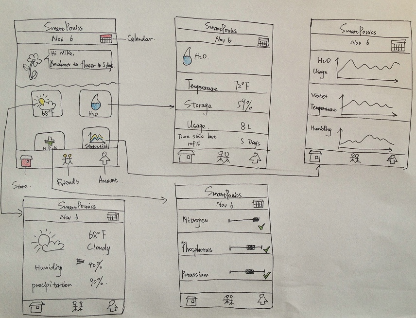
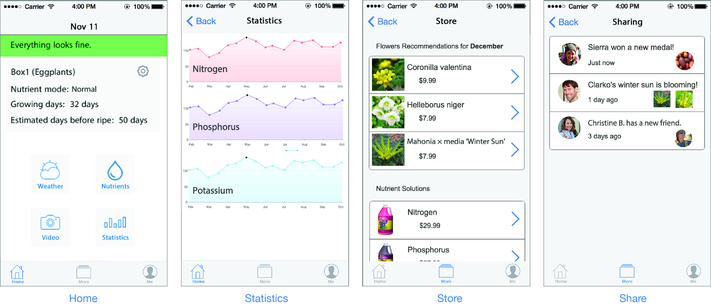

Team Role
UX/UI Designer
Duration
09/2014 - 12/2014
10 weeks
Methods
Persona
Survey
Field Investigation
Tools
Axure
Photoshop
User Research
To gain a more user centered understand of our original design question: “How to use technology to help people living in apartments grow plants easily?”, our team used surveys, interviews, field investigation, historical analysis and competitive product surveys to better inform the development of a viable prototype for rooftop hydroponic gardens that can be controlled with mobile applications.
-
Survey
An online questionnaire with at most 35 questions was spread out, and 86 responses were received.
Field Investigation
Since the mobile application investigation was performed during interviews, we needed to get a more coherent grasp of hydroponic technologies and see how they might integrate into a communal garden setting.
We visited the Cascade P-Patch in South Lake Union and the UW Farm to gather photos of plot organization and amenities. For the hydroponic investigation we visited the indoor Sun Shoppe in Fremont multiple times to confirm our design idea to the realities and requirements of hydroponic gardening.

Secondary Research
We searched news and scholarly journals for rooftop gardens and hydroponics and found several related articles. This helps us quickly find some research results that can either back up our design or suggest revisions.
Competitive Analysis
From our previous interview with Shaun Murphy at the Indoor Sun Shoppe, we were told of potential competitor equipment. They are: the iPonic controller from Link4 and IntelliDose Nutrient & Ph controller from American Hydroponics. The Link4 iPonic controller focuses on the commercial market rather than individual/home markets, while IntelliDose has already began to expand their market from commercial market to individual large scale operations.
Sketch

Prototype

Usability Testing and Key Findings
This study intended to determine how effectively the SmartPonics application’s design could guide users through the application and hardware setup process, check supply levels and manipulate settings. We conducted user testing between Nov 17 – Nov 19.
Our goals were to observe seamless navigation and setup by users with minimal confusion. We tested 10 participants. Our methodology was as follows:
We began the study by sending users a confirmation email that their SmartPonics account had been created and their apartment manager had assigned them three hydroponic boxes. This “Welcome” email set the context for the user, eliciting the expectation that they would be setting up the application during the test. We had users complete four tasks, described below, and took notes on whether their experience was as fluid as we hoped, noting where user doubt and misdirection occurred.
Next Project

QQ Browser
Product Manager
A top-ranked mobile browser run on Android platform designed specifically for Chinese users, had over 30 million daily active users.